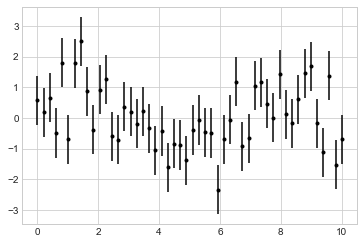
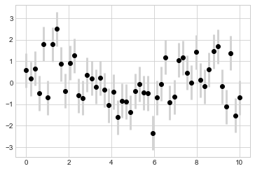
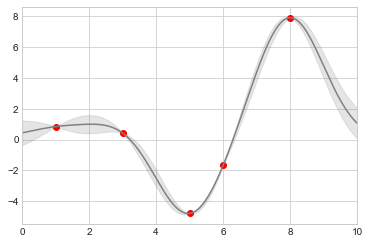

%matplotlib inline
import matplotlib.pyplot as plt
plt.style.use('seaborn-whitegrid')
import numpy as np불확실성 시각화
과학적 측정의 경우 불확실성을 정확하게 설명하는 것은 숫자 자체를 정확하게 보고하는 것만큼 중요합니다. 예를 들어 우주의 팽창률을 국부적으로 측정하는 허블 상수를 추정하기 위해 천체물리학적 관찰을 사용한다고 가정해 보겠습니다. 저는 현재 문헌에서 약 70(km/s)/Mpc의 값을 제안하고 있다는 것을 알고 있으며, 제 방법으로 74(km/s)/Mpc의 값을 측정합니다. 값이 일관성이 있나요? 이 정보를 고려할 때 유일한 정답은 알 수 없다는 것입니다.
보고된 불확실성으로 이 정보를 보강한다고 가정해 보겠습니다. 현재 문헌에서는 70 ± 2.5(km/s)/Mpc의 값을 제안하고 제 방법에서는 74 ± 5(km/s)/Mpc의 값을 측정했습니다. 이제 값이 일관됩니까? 이는 정량적으로 답할 수 있는 질문입니다.
데이터와 결과를 시각화할 때 이러한 오류를 효과적으로 표시하면 플롯을 통해 훨씬 더 완전한 정보를 전달할 수 있습니다.
기본 오류 막대
불확실성을 시각화하는 한 가지 표준 방법은 오류 막대를 사용하는 것입니다. 다음 그림과 같이 단일 Matplotlib 함수 호출을 사용하여 기본 오류 표시줄을 만들 수 있습니다.
x = np.linspace(0, 10, 50)
dy = 0.8
y = np.sin(x) + dy * np.random.randn(50)
plt.errorbar(x, y, yerr=dy, fmt='.k');
여기서 fmt는 선과 점의 모양을 제어하는 형식 코드이며 이전 장과 이 장의 앞부분에서 설명한 plt.plot에 사용된 단축형과 동일한 구문을 갖습니다.
이러한 기본 옵션 외에도 errorbar 기능에는 출력을 미세 조정할 수 있는 많은 옵션이 있습니다. 이러한 추가 옵션을 사용하면 오류 막대 플롯의 미학을 쉽게 사용자 정의할 수 있습니다. 특히 혼잡한 플롯에서 오류 막대를 점 자체보다 밝게 만드는 것이 도움이 되는 경우가 많습니다(다음 그림 참조).
plt.errorbar(x, y, yerr=dy, fmt='o', color='black',
ecolor='lightgray', elinewidth=3, capsize=0);
이러한 옵션 외에도 수평 오류 막대, 단면 오류 막대 및 기타 다양한 변형을 지정할 수도 있습니다. 사용 가능한 옵션에 대한 자세한 내용은 plt.errorbar의 독스트링을 참조하세요.
지속적인 오류
어떤 상황에서는 연속 수량에 대한 오차 막대를 표시하는 것이 바람직합니다. Matplotlib에는 이러한 유형의 애플리케이션을 위한 편리한 내장 루틴이 없지만 ‘plt.plot’ 및 ’plt.fill_between’과 같은 기본 요소를 결합하여 유용한 결과를 얻는 것은 상대적으로 쉽습니다.
여기서는 Scikit-Learn API를 사용하여 간단한 가우스 프로세스 회귀를 수행합니다(자세한 내용은 Scikit-Learn 소개 참조). 이는 불확실성을 지속적으로 측정하여 매우 유연한 비모수적 함수를 데이터에 맞추는 방법입니다. 이 시점에서는 가우스 프로세스 회귀에 대해 자세히 알아보지 않고 대신 이러한 연속 오류 측정을 시각화하는 방법에 중점을 둘 것입니다.
from sklearn.gaussian_process import GaussianProcessRegressor
# define the model and draw some data
model = lambda x: x * np.sin(x)
xdata = np.array([1, 3, 5, 6, 8])
ydata = model(xdata)
# Compute the Gaussian process fit
gp = GaussianProcessRegressor()
gp.fit(xdata[:, np.newaxis], ydata)
xfit = np.linspace(0, 10, 1000)
yfit, dyfit = gp.predict(xfit[:, np.newaxis], return_std=True)이제 데이터에 대한 연속 피팅을 샘플링하는 ‘xfit’, ‘yfit’ 및 ’dyfit’이 있습니다. 이전 섹션에서처럼 이를 plt.errorbar 함수에 전달할 수 있지만 실제로는 1,000개의 오류 막대로 1,000개의 점을 표시하고 싶지는 않습니다. 대신에 밝은 색상의 plt.fill_between 함수를 사용하여 이 지속적인 오류를 시각화할 수 있습니다(다음 그림 참조).
# Visualize the result
plt.plot(xdata, ydata, 'or')
plt.plot(xfit, yfit, '-', color='gray')
plt.fill_between(xfit, yfit - dyfit, yfit + dyfit,
color='gray', alpha=0.2)
plt.xlim(0, 10);
‘fill_between’ 호출 시그니처를 살펴보세요. x 값을 전달한 다음 하한 y 경계, 상한 y 경계를 전달하고 결과적으로 이들 영역 사이의 영역이 채워집니다.
결과 그림은 가우스 프로세스 회귀 알고리즘이 수행하는 작업에 대한 직관적인 보기를 제공합니다. 즉, 측정된 데이터 포인트 근처의 영역에서 모델은 강하게 제약을 받고 이는 작은 모델 불확실성에 반영됩니다. 측정된 데이터 지점에서 멀리 떨어진 지역에서는 모델이 강력하게 제한되지 않으며 모델 불확실성이 증가합니다.
plt.fill_between(및 밀접하게 관련된 plt.fill 함수)에서 사용할 수 있는 옵션에 대한 자세한 내용은 docstring 함수 또는 Matplotlib 설명서를 참조하세요.
마지막으로, 이것이 귀하의 취향에 비해 너무 낮은 수준인 경우, 이러한 유형의 연속 오류 막대를 시각화하기 위한 보다 간소화된 API가 있는 Seaborn 패키지에 대해 논의하는 Visualization With Seaborn을 참조하십시오.